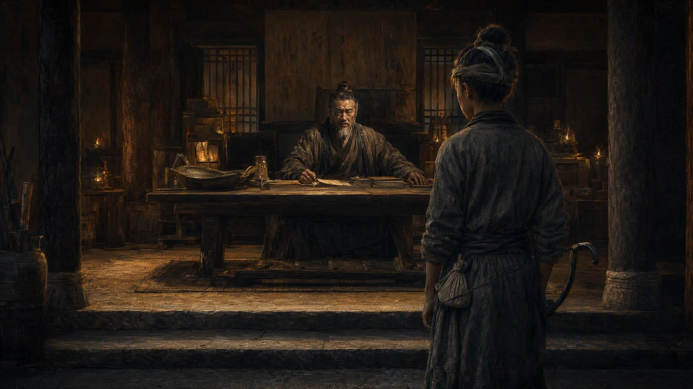

高邮旧账

隆平府的王府，是占了当年平江路总管府的老衙门改建的。门匾上"大周"两个字写得又粗又野，像拿刀刻的——不是文人写的，是盐贩子砍出来的。火焱站在门口，背上挎着黑弓，身边只带了陈老爹。王府的侍卫把他从头到脚打量了三遍，眼里明明白白写着四个字：怎么是个娃。
"百曲灶火号——火焱，"他把隆平府的召帖递上去，"奉召见驾。"
张士诚在大堂里等着。不是龙椅上端坐，不是屏风后半掩——他大马金刀地坐在堂前一张旧木椅上，穿着一件洗得发白的青布袍，脚上一双旧布鞋，手里攥着的不是玉玺，是一把旧盐铲。盐铲的刃口磨得锃亮，木柄上缠着发黄的麻绳——那是高邮起兵那年他从白驹场带出来的，用了十年，没换过。
火焱在门槛外站定，先看了一眼那把盐铲，然后才看张士诚。五十来岁，一张被盐场风吹糙了的黄脸，胡子花白，眼睛不大，却极亮，笑起来的时候像在称盐。张士诚也在打量他——从黑弓看到短打，从短打看到脚上的泥。
"你就是火家那个小当家？"张士诚开口了，嗓门粗，可语气不凶，"朕听张同说过你。他说你九岁——不，十岁，一个人蹲在灶前，跟他谈盐课。张同在白驹场卖了半辈子私盐，头一回被个娃子一句话点住命门。他跟朕说——'王爷，那个娃，要是早生二十年，高邮头一把火，轮不着您来点'。"
火焱笑不出来。他知道这句话的分量——张同是张士诚的老兄弟，他说这句话，是把火焱抬到了一个不该有的高度。
"王爷，"火焱拱手，"火家是灶户，只会烧火、熬盐、打铁、跑船。担不起张大人这句夸。"
"担不担得起，朕心里有数。"张士诚往椅背上一靠，"朕今天叫你来，不是论功行赏——是跟你算一笔旧账。"
"旧账？"
"高邮的旧账。"张士诚举起那把盐铲，"至正十三年，朕在白驹场烧了第一锅私盐，十八个兄弟，十八条扁担，一把盐铲——这把铲子，从白驹场打到高邮，从高邮打到平江。这十年，朕记着每一笔账——谁帮过朕的忙，谁欠过朕的盐，全都记着。你火家——"他把盐铲往桌上一放，"欠朕的不是账，是人情。"
火焱没说话。他知道张士诚在说什么：张同的白驹场旧盐牌、张士信的纸条、隆平府压下的三道折子、沈三签的运粮合同——每一样，都是大周替火家背的锅、挡的刀。
"王爷，"火焱说，"火家欠您的情，记在灶火号的账本上——您吩咐，火家办。"
"好！"张士诚一拍大腿，"朕要你火家的海路，替大周水师协运。不要你征，不要你调——朕要你火家的船，挂龙旗。"
"龙旗？"
"大周水师的军旗，挂在火家的船队上。"张士诚说，"你还是你火家的当家人。船，还是你火家的船；人，还是你火家的人。但海上的军务——运粮、运兵、哨探——由大周水师调度。火锻旗——照挂。龙旗——照挂。两旗并立。"
堂上一片安静。张同站在屏风后面，使劲朝火焱使眼色——那意思是：答应！快点答应！这是王爷给的最大面子了！
火焱看着那把旧盐铲，看了很久。这把铲子从白驹场一路铲到这里，铲掉的是高邮城，铲掉的是整个江南。它值十座城。可他怀里那把弓——直脱儿的黑弓——比这把铲子重几分？
"王爷，"他说，"火家的船，能挂龙旗。"
张士诚眼睛亮了一下。
"可火家的船，不在江里跑。火家的船，跑的是海——崇明往南，泉州往东，日本往西。大周的水师——"他顿了顿，"在江里。两不重叠。王爷要节制海上的军务，火家听调。可王爷要是调火家的船进江——那火家的海路就断了。海路一断，泉州回来的香料、日本回来的银子，就全断了。"
他抬起头，直视张士诚："王爷，您是盐贩出身。盐贩最懂一句话——哪片海养哪片船。火家的船，是吃海水的。江水养不活。龙旗，火家挂；可火家的路，还是在海上。"
张士诚看着他，看了很久。
然后他笑了——笑不是高兴，是了然。他把那把旧盐铲在手上掂了掂，忽然问了一句毫不相干的话：
"小子，听说你在泉州，拿三块牌子堵了方国珍的码头？"
"是。"
"哪三块？"
"隆平府的盐牌。应天府的令牌。直脱儿公的商路契书。"火焱说，一个字一个字地，"三块牌子，写的都是'火'。"
张士诚哈哈大笑。笑声震得屋顶的灰簌簌往下落。
"好！好得很！一个十岁的娃，拿着朕的盐牌、朱元璋的令牌、直脱儿的契书，把方国珍堵在码头上——方国珍那张脸，朕真想亲眼看一看！"他站起来，走到火焱面前，居高临下地看着这个十岁的孩子，"火家小当家，朕问你一句话——你就不怕朕听了应天府令牌的事，灭了你火家？"
"怕。"火焱说，"可王爷不会。"
"为什么？"
"因为王爷手里的盐铲，值十座城。可王爷心里还有一样东西——"火焱指了指张士诚胸口，"比盐铲值钱。"
"什么东西？"
"旧账。"火焱说，"王爷方才说了——高邮起兵的时候，十八条扁担，一把盐铲。那份旧账，王爷记了十年。火家欠王爷的人情，还没还——王爷不会现在收刀。"
张士诚收回手，站在堂前，看着窗外，沉默了很久。他把那把盐铲抄在手里，掂了掂，忽然往火焱怀里一扔——火焱双手接住，沉甸甸的，铲柄上缠的麻绳粗粝地硌着他的掌心。
"这把铲子，跟着朕十年了。"张士诚说，"朕今天把它给你——不是赏，是记。火家欠朕的旧账，拿这铲子记着。什么时候火家还清了人情的账——你什么时候把这铲子还回来。"他顿了顿，"在这之前——火家替大周跑的海路，都不是火家的账。是人情。"
火焱握着那把旧盐铲，铲刃在灶火的映照下泛着光。
"王爷，"他轻声说，"这把铲子，火家收着。等哪一天，火家把欠您的旧账还清了——铲子还您，咱们再算新账。"
张士诚笑了。笑得眼睛里亮晶晶的，不知道是火光，还是别的什么。
"你走吧，"张士诚挥了挥手，"回去好生煮盐。对了——"他忽然压低声音，"听说应天府那边，也在找海商。"
火焱的心猛地一跳。可他面不改色："火家只做买卖。王爷出价高，火家替王爷跑；别人出价高——"
"不用说了。"张士诚打断他，意味深长地拍了拍火焱的肩，"你的买卖，朕知道。只要火家跑的是大周的海路——应天府的事，朕当没看见。"
火焱怔住了。
原来张士诚从头到尾都知道——火家跟朱元璋的暗线，他早就查出来了。他没有追究，不是没证据，是大度。他给火家留了一条退路，是因为他要的不是火家的忠心——是火家的海路。
走出王府大门的时候，张同跟上来，脸上是说不清的表情："小子，王爷那句话，你听懂没有？"
"听懂了。王爷知道火家跟应天府做买卖的事——他不追究，是给火家留面子。可王爷这把铲子，不是随便给人的。铲子在我手里，就是王爷在提醒我——旧账没还，别过河拆桥。"
"你明白就好。"张同叹了口气，"王爷是高邮起兵的人——重情，重旧。你火家欠他的，他记着；你火家帮他的，他也记着。这把铲子，分量不轻。"
火焱握着那把铲子，走出隆平府的城门。陈老爹在船上等他，看见他手里多了一把旧盐铲，愣了："火家哥儿，这是什么？"
"王爷给的。"火焱把铲子放在膝上，"他说这是他高邮起兵那年带出来的——用了十年，没换过。"
"值钱吗？"
"不值钱。可值十条命。"火焱把铲子小心包好，"王爷把最值钱的东西给了我——他的旧账。这把铲子，记着高邮十八条扁担起兵的情分——他把这情分挂在我身上了。"
船离了隆平府的码头，往东去。暮色里，火焱把那把铲子放在弓、印、图、册子一起的位置。张士诚的铲，直脱儿的弓——一个是盐贩的根，一个是蒙古的弓。灶台砖下压着的，越来越沉了。
"海妹，"火焱忽然问，"咱们欠王爷的旧账——你觉得还得清吗？"
"还不清。"海妹摇着橹说，"可王爷把铲子给你，大概不是要你还——是要你记着。"
火焱没有回答。他蹲在船头，看着渐渐黑下来的江水，把黑弓从背上取下，搭上弓弦，轻轻弹了一下。弓弦嗡地弹响了一声，像是那个坐在隆平府的旧木椅上的盐贩王爷，拿着那把旧盐铲，在老远的地方，笑了一声。
高邮旧账。这笔账，不是用银子算的。
是用命算的。
· 第三卷《逐鹿》 ·